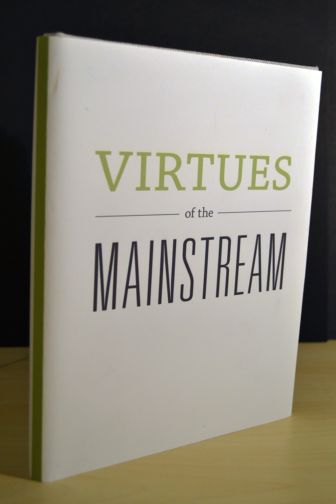
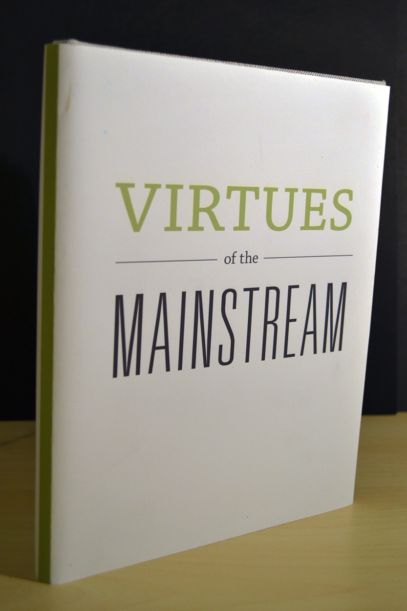

The Ungerground Mainstream
A collaboration of copy by Gui Bonisepe, and Steven Heller, The Underground Mainstream talks about the 'Hipster' movement through the twentieth and twent-first century. This project was oriented around type design and print orientation and layout. In addition to Bonisepe, and Heller's work, I incorporated my own timeline and copy to compliment the pieces that talk about the significance of something new in today's society.
Typography 2014

 
